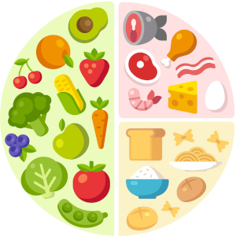

SUPERMERCADOS
¡Explora la variedad de supermercados de España sin moverte de casa! Nuestro filtro por
establecimientos te permite elegir tus tiendas favoritas y crear una lista de la compra que se
adapte a tus preferencias. Compara ofertas, encuentra tus productos esenciales y ahorra tiempo
al concentrarte solo en los lugares que más te gustan.

PRESUPUESTOS
¡Compra inteligentemente con nuestro filtro por presupuestos! Define tu límite de gasto y deja
que nuestra aplicación cree la lista de la compra perfecta para ti, optimizando cada euro.
Descubre una forma nueva y eficaz de gestionar tus compras sin sacrificar la calidad ni tus
finanzas.
ALIMENTACION
Personaliza tu experiencia de compra seleccionando tus productos preferidos. Con nuestro filtro
por productos, tu lista de la compra se adapta a tus gustos y necesidades específicos. Desde
marcas favoritas hasta ingredientes esenciales, optimiza tu tiempo y disfruta de una experiencia
de compra única y personalizada. ¡Haz que cada compra cuente con nosotros!

RECETAS
Imagina una aplicación que va más allá de la lista de la compra convencional. En Casafood, no
solo te ayudamos a preparar tu lista perfecta para comprar en todos los supermercados de España,
sino que también te llevamos a la cocina con nuestro servicio estrella: la creación automática
de recetas.
Convierte tu lista de la compra en experiencias culinarias emocionantes. Nuestra aplicación
analiza tus productos seleccionados, sugiere recetas deliciosas y te guía paso a paso en la
preparación de platos increíbles. ¡Explora la magia de cocinar con facilidad, creatividad y sin
estrés!
¡Haz de cada comida un viaje culinario! Regístrate ahora y descubre cómo Casafood transforma tu
lista de la compra en momentos inolvidables en la cocina. ¡Bienvenido a una nueva era de
planificación y disfrute culinario!